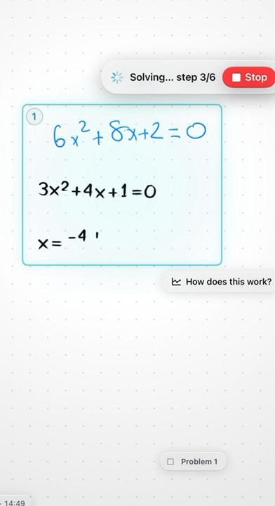
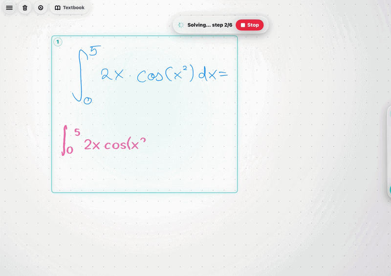
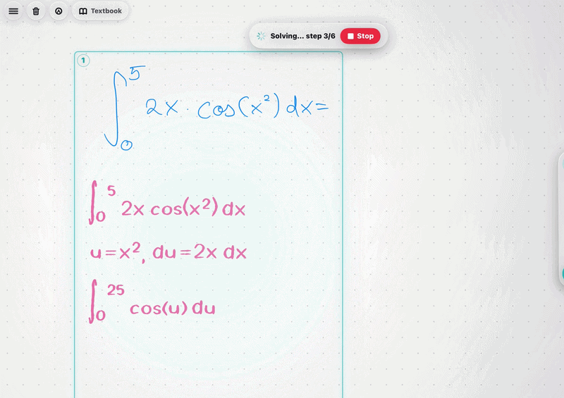
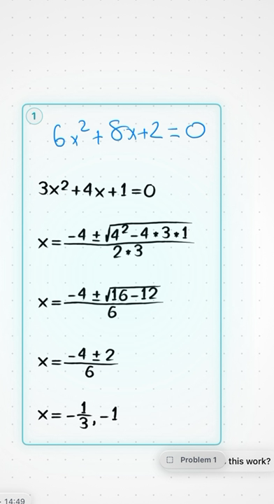

It works the way you already study.
Write the problem out by hand. Work it the way you normally would. When you get stuck, ask for exactly as much help as you want, and Klera writes the next bit in front of you, on your page, in pen.
Recorded in the app, sound on. You write in blue, Klera writes in black, and it talks you through each line as it writes it.
Why this is not another chatbot
You never retype anything
No photographing your book, no typing an equation with a keyboard that has no square-root key. You write the maths. That is the input.
The answer lands on your page
Klera writes its working in handwriting, under yours, at the right size, in the right place. You can keep working around it. It is one page, not a conversation in a separate window.
It notices before you say anything
How hard you press and how long you hover before the first stroke, but also whether you tried before asking, where your working first went wrong, and how you sound when you talk to it. Six different things at once, measured against your normal rather than an average person. You never see a score for any of it. It just makes the help better.
Ask for exactly as much as you need
Five rungs. You choose how far up to go, and you can stop at any of them. Nothing forces the full answer on you.
-
Hint
A nudge toward the idea you are missing. No working, no answer. Ask again and it gets more specific rather than repeating itself.
-
Next step
One line. The single move that comes next from where you actually are, written on the board. Then it stops and waits for you.
-
Explain
The why, in speech and on the board. Why this method, why this substitution, what the thing is for.
-
Find my mistake
It reads your working and points at the line where it went wrong, rather than handing you a clean solution and leaving you to spot the difference yourself.
-
Solve
The whole thing, step by step, written and spoken at a pace you can follow. If your partial working is on a wrong path it clears that path first, so the page ends up correct instead of confusing.
Sometimes it makes you do it
This is the bit that makes Klera feel like a person rather than an answer machine. When it can tell you are capable of the next line, it does not write it. It writes one step, explains it, and then says your turn, and waits.
There is no button to press. You just write the next line on the page, and it watches. If you get it right it says so and moves on. If you get it wrong it tells you something useful without giving away the answer, and lets you try again. If you sit there doing nothing it nudges you, and if you are properly stuck it writes the step itself and carries on rather than leaving you staring at the page.
You can say "just solve it" at any point and it will, picking up from exactly where you got to. Nothing you already wrote gets thrown away.
You never have to decide when to be pushed
Klera decides, per problem, and it is careful about it. It only hands over when it already knows you well enough, when the problem is inside what you have shown you can do, and when you are not already having a bad time. If any of those is uncertain, it just shows you the solution.
So it will guide you on one question and solve the next one for you, and that is deliberate. Being pushed when you are not ready is worse than being shown an answer you could have found yourself.
It will not congratulate you for nothing
If it ended up writing every step because you were stuck, it does not tell you that you smashed it. It keeps track of how much you actually did. Praise you did not earn is worthless, and it makes the praise you did earn worthless too.
One problem, start to finish
Four frames out of the same recording, in order. Nothing here is a mock-up and nothing is sped up.




It notices things you never told it
This is the part that is hard to believe until it happens to you. Klera is reading how the work is going the whole time, not just when you ask it something.
Bored is not the same as stuck
If you are getting everything right, fast, on problems that are too easy, that is a problem too. Klera treats it as one and makes the next question harder instead of helpfully explaining something you already knew.
Stuck is not the same as struggling well
Rubbing something out and then fixing it yourself is the best thing that can happen in a session, and it gets left alone. Rubbing something out three times and getting nowhere is a different state, and that one gets help.
It marks work you never asked about
When you finish something and move on, it quietly checks whether it was right. You are not told, nothing pops up, no tick appears. It just means the next thing it gives you is better aimed.
It knows if you tried first
Solving something after one small hint and asking for the whole answer straight away are very different, and they count very differently. You cannot accidentally teach it that you are better than you are.
It works out your normal
Everything is measured against how you usually write, not against an average person. Some people press harder when they are stuck. Some go completely still before the pen touches the page. It learns which one you are.
You never see a score
No percentage, no streak, no progress bar, no levels. Being told you are at 71 percent does not help you do the next question, and it makes people work for the number instead of the maths.
When a picture would help, you get one you can pull apart
Klera decides on its own when a diagram is worth drawing, builds it from your actual problem, and puts it on the board beside your working. It is a real thing you can use, not a picture of one.
Here it has read a quadratic off the page and drawn it. Dragging the slider changes the equation and everything recomputes live, so you can watch the two roots slide together and merge at the exact moment the curve lifts off the axis. That is a much faster way to understand a discriminant than being told what one is.
If it cannot build something honest for your problem, it says so and offers to try again. It will never invent a graph with made-up numbers on it.
Sit a real past paper
Give Klera a past paper as a PDF. It pulls out the questions and the mark scheme, then lays the paper out on the canvas so you can sit it properly, by hand, under time.
When you finish, it marks each answer against the scheme and then teaches the corrections instead of just listing them. The questions you lost marks on come back later as practice, slightly harder than where you are now rather than at the level you already cleared.
That "slightly harder" is deliberate and it is calculated, not guessed. Klera keeps a running record of which difficulty levels you attempt and which you finish without help, and it ages that record out over months so last term does not hold you back. The next problem is aimed just above your demonstrated ceiling.
Too easy and you switch off. Too hard and you give up. The whole point of the model it builds of you is to keep finding the narrow band in between.
What you need
Get on the early-access list
The first builds go to a small group who will actually use Klera on real homework and tell us what is broken. If you are one of them, you keep unlimited Klera Premium for life, whatever we charge for it later. No card, no trial that quietly turns into a subscription.